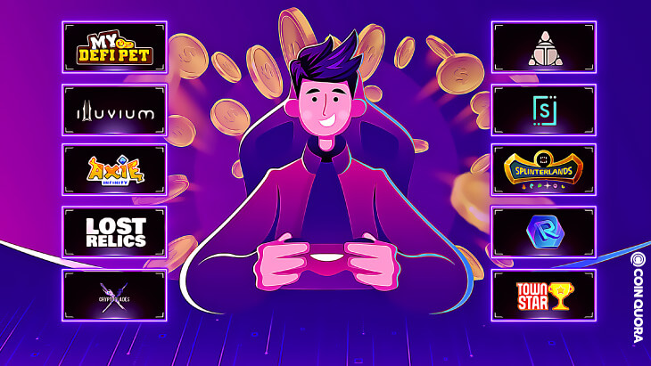
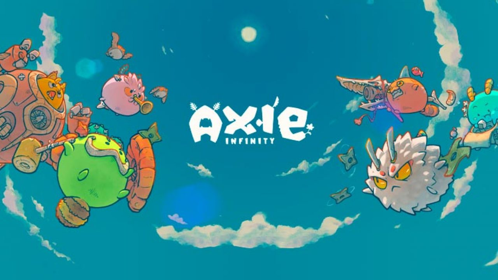

PLAY-TO-EARN
Se trata de um conceito muito recente que vem ganhando força, onde você ganha dinheiro por jogar. Isso mesmo que você pensou! Ganhar dinheiro jogando sem precisar de ser um “pro-player” já não é uma realidade distante, isso se dá graças a tecnologia do Blockchain que serve de sustentação para as criptomoedas e NFT’s (Tokens não fungíveis).

Cada jogo possui o seu próprio sistema econômico e moedas envolvidas para sustentação do mesmo. Apesar de ser um fato que muitos estão tendo bom retorno financeiro, o mesmo não se aplica a todos envolvidos nos projetos. Nos tópicos a seguir destrincharemos as economias e características de alguns jogos “Play-to-earn” em alta no momento. Mas, antes de tudo deve saber um pouco sobre o que é uma NFT e o porque de serem tão valiosos.
O que são NFT's?
NFT, ou token-não-fungível é o resultado da aplicação da tecnologia de blockchain em um objeto único. A mesma tecnologia que valida milhares de transações diariamentes aplicada a um objeto torna ele algo único, cujo código pode pertencer a somente uma pessoa, e é daí que parte o seu valor relativo. A demanda e a escassez operam até mesmo sobre produtos digitais que apesar de não serem tão "paupáveis" quanto uma obra de arte podem chegar a possuir o mesmo valor de uma. Como exemplo a "Human ONE", que mistura artes física e digital, porduzida por Beeple cujo NFT da obra foi vendido pelo valor de R$ 160 milhões de reais!
Bombcrypto
O jogo funciona com um sistema de "gacha" (personagens randomicos cujas características são melhores de acordo sua raridade) com preço fixado em 10 $Bcoins, cryptomoeda do jogo. Os personagens, de gráfico pixelizado diga-se de passagem, explodem baús com bombas automaticamente em um mapa que remete a classicos como "Bomberman" gerando um valor x de Bcoins que pode vir a ser alterado pelos desenvolvedores do projeto a qualquer momento, podendo assim reduzir ou aumentar o tempo que se leva para recuperar o investimento. O problema disso tudo está nas probabilidades, a chance de conseguir um personagem acima de "comum" são bem baixas, obeserve a seguinte tabela:
| Comum | Raro | Super Raro | Epico | Lendário | Super Lendário |
| 82,87% | 10,36% | 5,18% | 1.04% | 0,52% | 0,04% |
A depender da raridade do seu Bhero o seu retoro financeiro é menor, logo a longo prazo o risco dos mais desprovidos de sorte cresce bastante. Se trata de uma experiencia de jogos mais próxima dos famigerados "caça-níqueis" do que de jogos que visam somente entreter, deve-se ter muita cautela para investir em tais ativos. Ao adquirir qualquer NFT acima de comum seu retorno vem até 10 vezes mais rápido se comparado aos outros.
Axie Infinity

Enqaunto o último exemplo possuía apenas uma cryptomoeda ligada ao seu ecossistema, o Axie Infinity
possui duas: O SLP (Smooth Love Potion) e o AXS (Axie Infinity).
Se tratando de um projeto com mais de 3 anos, estamos falando do mais estável jogo do gênero e essa
estabilidade se dá por seu modelo de multiplas entradas,
saídas e reentradas de recursos financeiros no jogo. Aqui o fato de ser um jogo é ultilizado a favor
da econômia. Como isso funciona? Bom, para participar do jogo você deve possuir
ao menos 3 Axies (NFT’s do jogo) que custam algo em torno de $200,00 cada tendo seus times mais
humildes custando algo por volta de R$3000,00 onde para se obter um axie so existem duas maneiras:
comprando de outros jogadores ou cruzando axies, o que consome AXS e SLP no processo.
Por se tratar de um jogo competitivo com cartas atreladas as partes dos axies, muitas vezes pode se
fazer necessário a troca ou venda de seus axies para ter um melhor retorno financeiro,
criando assim um sistema onde existe tanto dinheiro "saindo" como "entrando", o tempo todo.
O token de incentivo aos jogadores é o SLP (que possui suprimento infinito) que eventualmente
causou problemas a economia das Filipinas, por se tratar de uma moeda extremamente valorizada se
comparada com a moeda nacional, levando as pessoas a negociarem alimentos, roupas, utensílios e até
mesmo carros por meio de moedas do jogo. Muito além de um jogo, hoje o Axie Infinity é o meio de
sustento de muitas famílias e nos mostra um vislumbre do que pode
vir a ser o futuro. Seriam os jogos uma solução para uma possível crise por falta de empregos
futura? Esse modelo pode ser algo sustentável a longo prazo?
Existem muitas perguntas e para a maioria delas a resposta ainda é um sonoro "não sei", nos resta
observar e apreciar as maravilhas que a ciência pode vir a nos porporcionar!